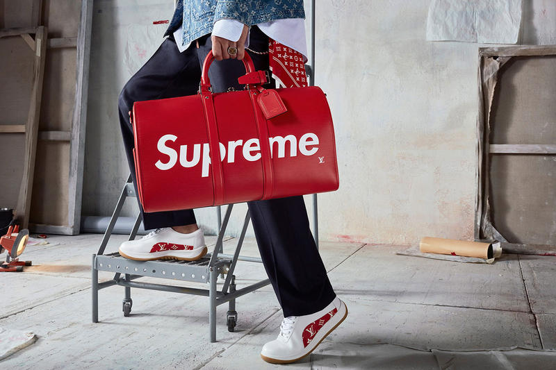
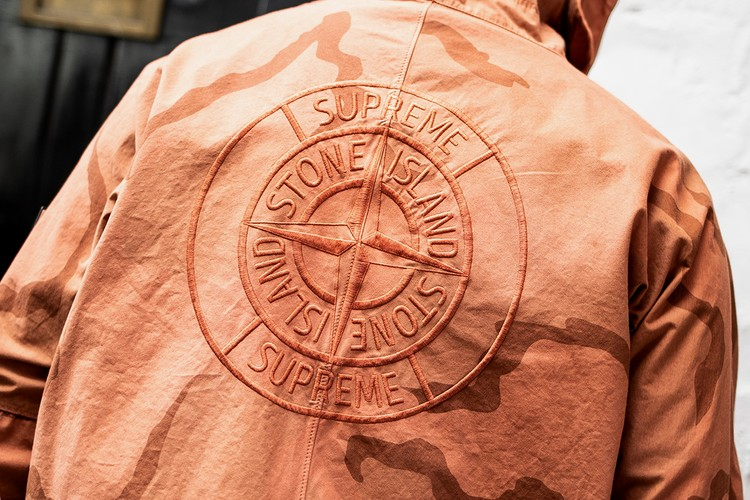
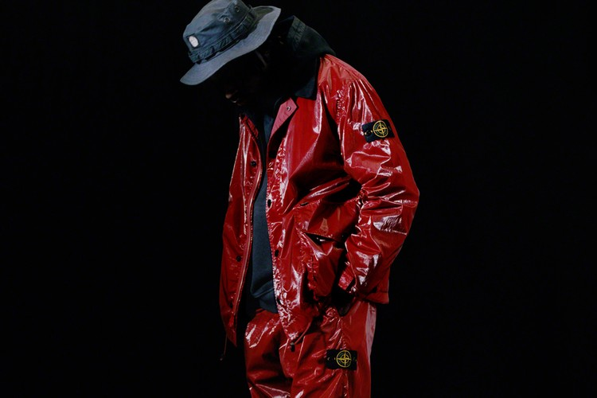
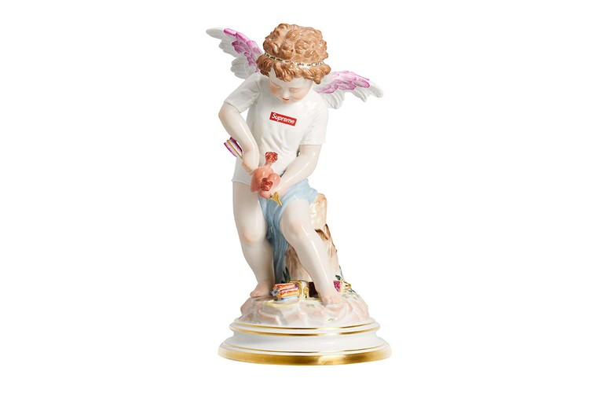
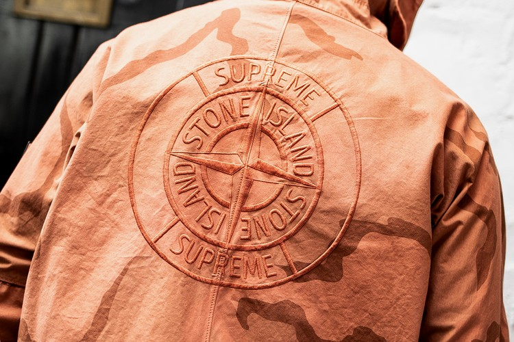
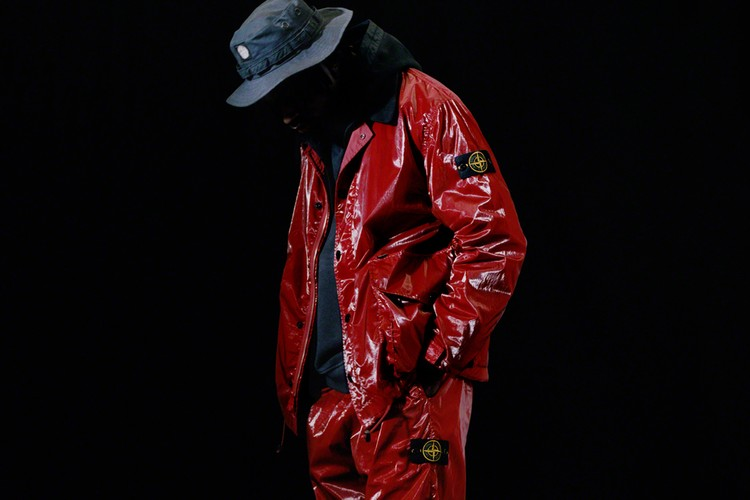
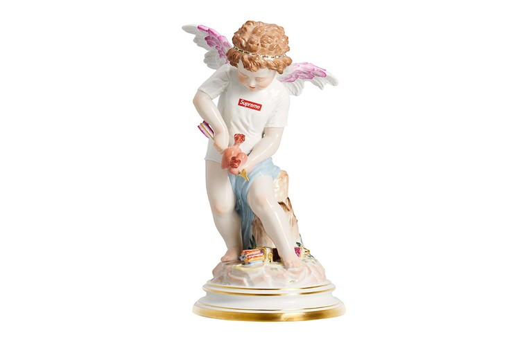

over 20 år har express jobbet med noen av de størrste desginers verden har stått over. supreme er et kles merke bygget fra de grunn i NYC. Vi produserer gensere, bukser, accessories og hatter. Express salg start var sakteboard og iden om å lage et merke rundt sakteboards. Exrpesshar gitt ut skateboard dekk med kunstenere. i tilleg til samrabeid med potografer. Noen eksmpel på samarbeid partnere er Larry clark, Nate Lowman, Marilyn Minter, Mark gonzales og Dash snow. Vår kejente alltid elskede photografi partner Terry Raichardson har tatt noen av våre mest bemerkelses verdige bilder. Blant annet Michal jordan, Lady gaga, Kermit the frog og Gucci mane. Alle ekstremt vellykede verk med en omsetning på over 50 millioner dollar. Andre kjendiser vi har arbeidet med er Kate Moss, Slick Rick, Diddy og David Blaine. Du kan se vår kledning i den femte episoden av Patriot act. hvor de snakker om Express sin innflytelse på gate kulturen i verden. Den 18 januar 2017 holdt det lukseriøse otefirmaet Louis Vuitton et mote show hvor et samarbeid mellom Express og Louis Vuitton ble bekreftet.
 





Pop up butikker åpnet i stor byer rundt om i verden. Ettersom etterspørrselen var enrom ble Express netktet å åpne en pop up i New yrok. Dette på grunn av den enorme trafikken og oppstyret som ville ha skjedd. Merket express ble oppfunnet av James Jebbia. Den føste store butikken som ble åpnet var i NYC down town manhatten 1994. Den ble designet av saktere og siden åpning til den dag i dag. Styrt av skatere. Ettersom årene gikk ble en til butikk åpnet i USA I Los Angeles. Butikken er dobbelt så stor og innholder en pipe. Slik at drivere til butikken kan gjøre det de gjør best. James Jebbia ble sitert med at han sa alle supreme utgivelser skulle klassifiseres som begrenset.
Blessed
A Express clothing Production
den 5 oktboer 2017 åpnet express sin 11 butikk. Den andre i NYC. i 2016 bekreftet Jebbia at Express etikketen hadde en omsatt verdi på 500 millioner dollar. ingenting av Express planlagt i forveien. dens suksess en tilfeldighet av sted, tid og hardt arbeid. Da han var nitten, hadde Jebbia forlatt England og var salgsassistent på en SoHo-butikk som heter Parachute. Derfra arbeidet han et bord på det nærliggende loppemarkedet, og grunnla deretter en butikk, Union, på Spring Street som solgte britiske varer og streetwear. Tilbring litt tid med Jebbia, og du blir kjent med sine egne favorittmerker, som inkluderer kjente navn som Patagonia sammen med noen som du ikke sannsynligvis har hørt om.

James Jebbia, mannen som grunnla i 1994 og driver den SoHo-baserte firmaet som har gjort klær og skateboards og mange andre ting som folk som elsker det absolutt må ha, tenker ikke på Høyeste måten de fleste på mote kan ha - som en merkevare som startet i en liten butikk på Lafayette Street, og siden har smeltet seg til legendarisk global status. Han tenker på Supreme mer som et rom. Da Jebbia var en tenåring i Crawley, West Sussex, i åttitallet, som jobbet på en Duracell-fabrikk, lyttet til T. Rex og Bowie på pauser og brukte sine ekstra penger på turer til London for å kjøpe klær, var det alltid i en vis unnvikende slags butikk-en som ble modell for Supreme.